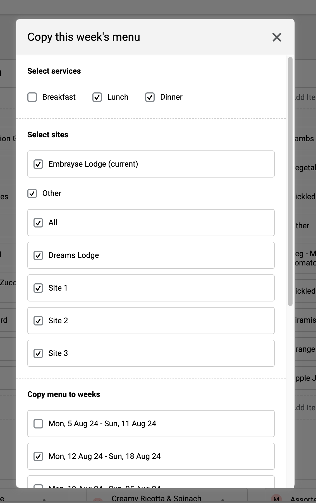
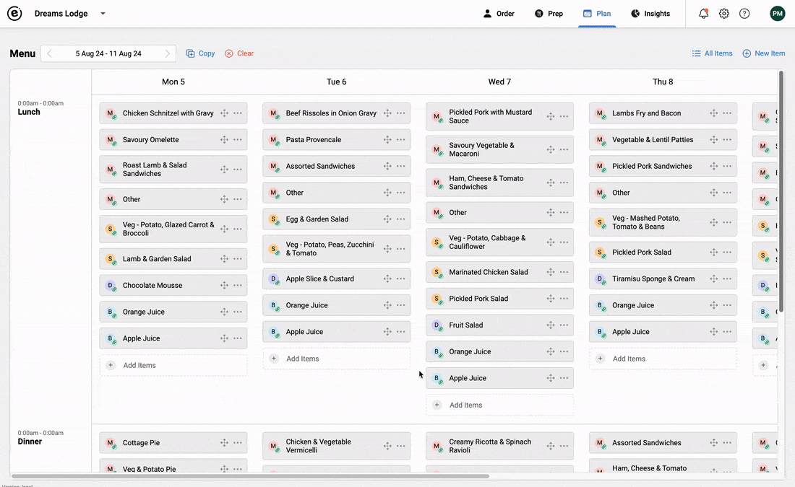
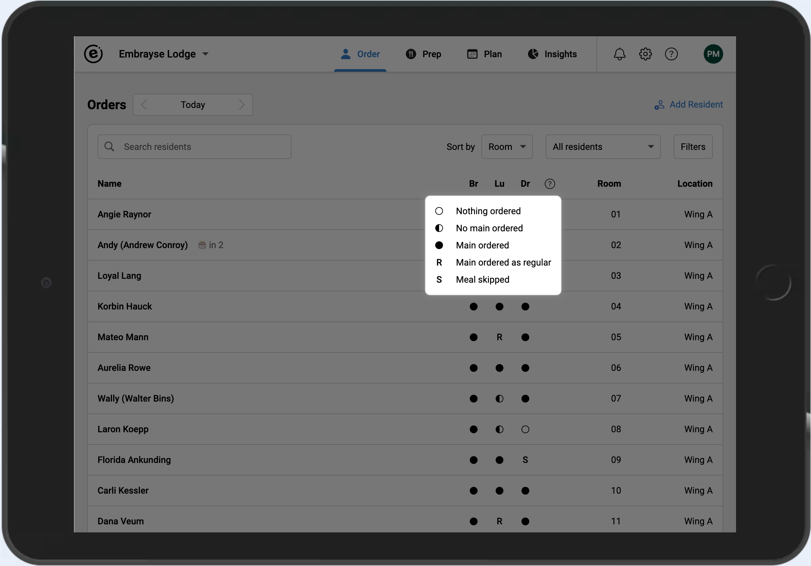
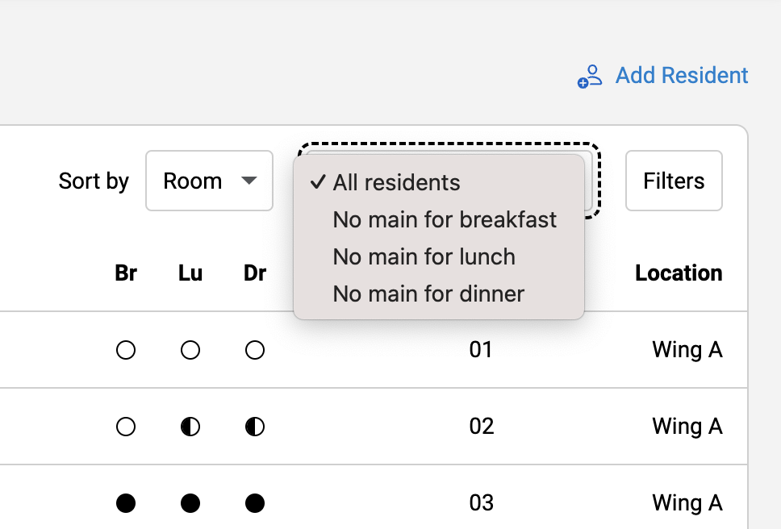

Release 2024.3 – Cross-site menu copy, Meal Link feature, and enhanced order status
Here are the latest improvements and additions to Embrayse, to help make your work even easier and more efficient.
Cross-Site Menu Copy and Meal Link
Many aged care providers choose to centralise their menus, while wanting to give each site the autonomy to make variations to the menu to respond to local produce availability and resident feedback. The menu copy feature now allows you to copy a menu not only to other weeks, but also to other sites. Copied menus can still be changed by a user with a Chef role in the destination site.
When menus are transferred to another site, meals become available through the new Meal Link feature. A linked meal is available in the second site to use when needed, but can only be modified in the original site. Future changes to a meal will automatically be reflected in all sites that share the Meal Link.


Enhanced Order Status
We have enhanced the way order status is displayed and filtered on the Order List page. There are 5 distinct statuses for a given meal service. Being able to see, at a glance, the residents that don't have a main meal ordered will make follow ups easier. Regular orders are flagged with an "R" indicator. To make it even easier to follow up on residents with missing orders, we have updated the relevant filters to view those who are missing a main for breakfast, lunch, or dinner.


Other Improvements and Bug Fixes
- Added APIs for uploading and downloading the resident profile photo.
- Improved API performance.
- The Prep report now shows the number of people with No Order status when looking at the meals summary.
Want to see Embrayse in action?